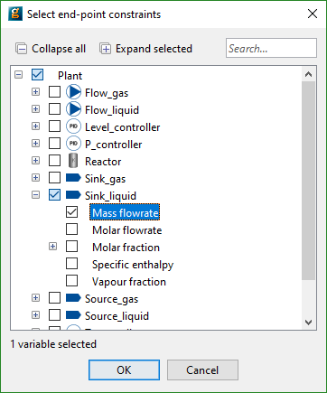

The purpose of the Constraints tab is to allow the user to impose safety and operational limits on the designed experiment to ensure. This ensures that the result of the Experiment Design problem is an experiment that is allowable and feasible to run in practice. To capture these limits, gPROMS allows for the specification of endpoint and interior-point constraints on the predicted behavior of variables in the experiment that is to be designed. There are no interior point constraints for steady-state models.
In order to define an endpoint constraint, click on the Constraints tab in the Experiments to be designed entity editor and do the following:
Use the Select... button to populate the table using a dialog-based choice which will only display variables that the model developer has chosen to be suitable as constraints. See the section on dialog-based variable choice in Model Validation.

Alternatively, click the <new> cell in the Variable name column of the Endpoint constraints table at the top of the window and type the full pathname of the gPROMS variable. Note that pathname completion can be activated by pressing Ctrl-Space.
The full pathname may be converted to a descriptive name in case the model interface has been configured accordingly. Depending on the chosen application preferences, it may not be possible to edit the table directly.
Specify the lower and upper bounds on the Variable. When gPROMS solves the Experiment Design problem it will ensure that the Variable indicated is restricted to within the specified bounds. Alternatively, check the Fixed? cell and specify the constraint value if you desire an endpoint equality constraint. Note: endpoint equality constraints are very challenging for numerical reasons and it is usually better to specify an endpoint inequality constraint with a tight lower and upper bound.
Repeat the above for each new endpoint constraint you wish to add. If you wish to delete an endpoint constraint, click the Delete button at the bottom of the window.
Interior-point constraints are inequality constraints defined at the start of every time interval. Such constraints are slightly more complicated to specify because of the fact that it is possible to have the bounds varying from one interval to another.
In order to define an interior-point constraint, click on the Constraints tab in the Experiments to be designed entity editor and follow the same steps in the Interior-point constraints group as for endpoint constraints. Then
Specify the lower and upper bounds on the Variable. When gPROMS solves the Experiment Design problem it will ensure that the Variable indicated is restricted to within the specified bounds at the start of each time interval. Alternatively, check the Varying? cell and then specify the lower and upper bounds on the interior point constraint for the start of each interval in the experiment to be designed.
Repeat the above for each new interior-point constraint you wish to add. If you wish to delete an interior-point constraint, click the Delete button at the bottom of the window.
It should be noted that it is possible to supply constraints that make solution of the Experiment Design problem impossible - an infeasible problem is created; for instance, the specification of too low a temperature may lead to an infeasible problem if there is only limited cooling available.